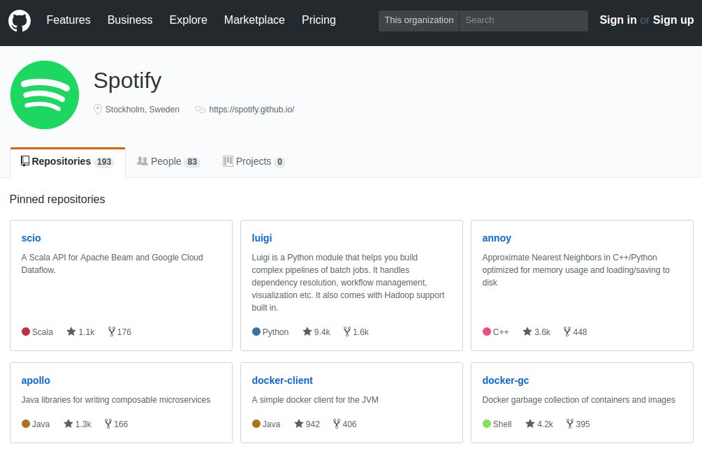
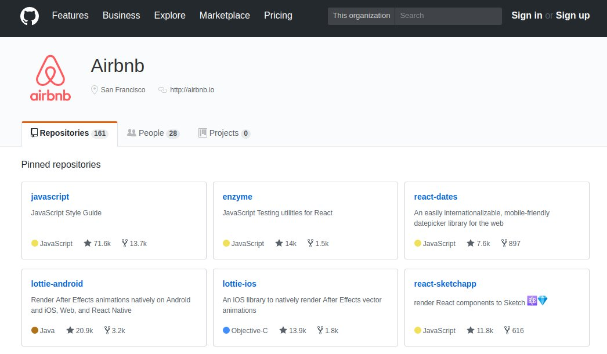
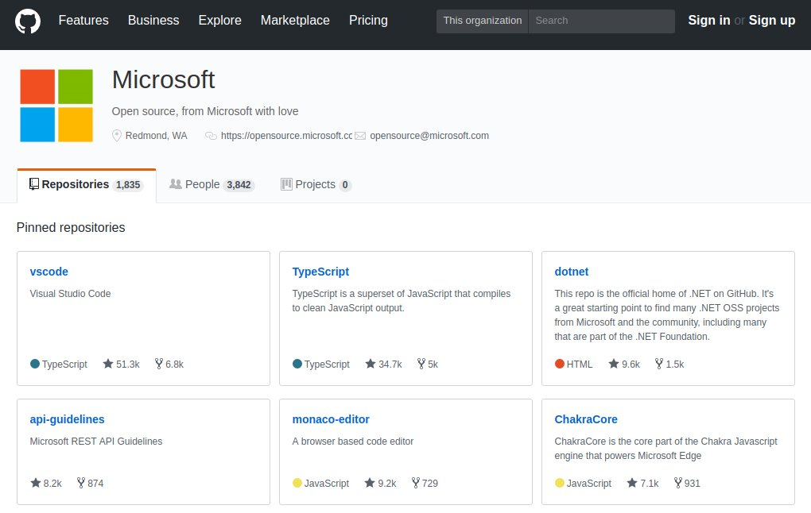
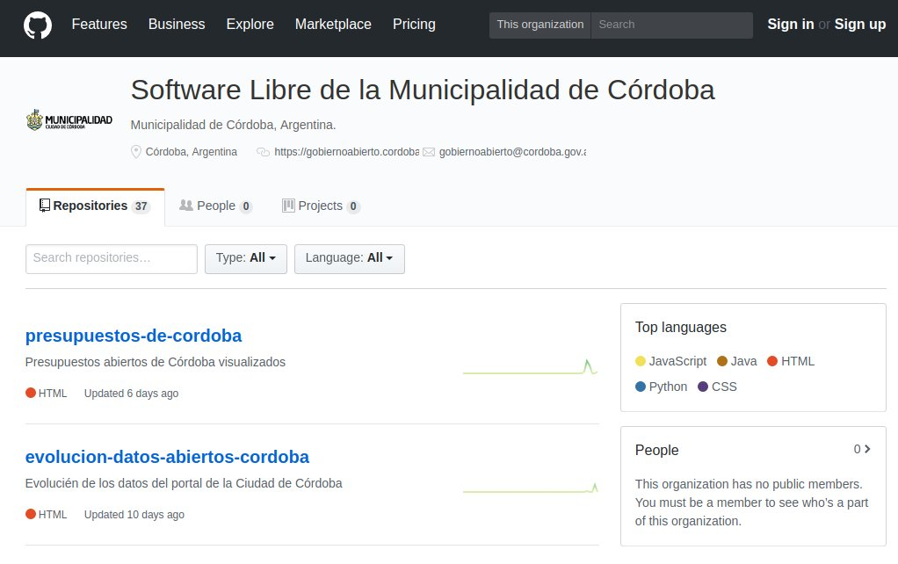
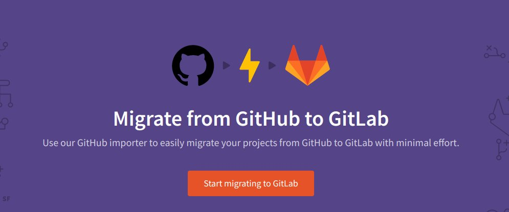

Microsoft compra GitHub
Originalmente publicado como hilo en Twitter.
Hoy se anunció la compra de GitHub por parte de Microsoft. Posiblemente muchos no conozcan qué es GitHub y por qué es relevante esta compra. Las empresas más grandes del mundo lo usan. Acá un intento de explicar un poco más.




GitHub básicamente es una plataforma web para desarrollo de software en equipo. Está basada en Git, un producto para controlar versiones de software. Desarrollar software puede compararse a escribir un libro: ¿se imaginan escribir un libro entre 2, 5, 100 o 5000 personas?
Git se creó para administrar la complejidad de desarrollar Linux. Miles de personas trabajan simultáneamente en este "libro" que tiene millones de páginas. Git es software libre. GitHub no: es un producto que se beneficia de Git pero le suma una interfaz práctica y simple.
Es posible mezclar software libre y negocios. GitHub es uno de los muchos ejemplos de esto. Cuesta mucho hacer llegar el mensaje pero esta puede ser una buena oportunidad. El software libre permite hacer muy buenos negocios y compartir conocimiento; no son excluyentes.
GitHub tiene una versión paga pero es mucho más conocida por las virtudes en permitir su uso gratuito para la administración de software libre. Hoy GitHub es la plataforma más usada por programadores para compartir código fuente.
Microsoft fue siempre un ícono del software cerrado, lo opuesto de libre. Desde hace años Microsoft busca cambiar esa imagen y este parece ser otro paso más en ese sentido. Lamentablemente confiar en que GitHub siga siendo el lugar de encuentro del software libre parece ahora más difícil.
GitLab es un competidor de GitHub pero de software libre. Tiene cuentas pagas también. Es el posible destino de miles de personas en este momento. Atenti a la home de GitLab AHORA:

Hey @gitlab, ¿how many new users today?
Comentarios
Comments powered by Disqus